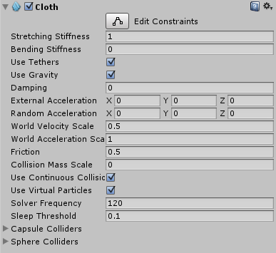

Cloth
The Cloth component works with the Skinned Mesh Renderer to provide a physics-based solution for simulating fabrics. It is specifically designed for character clothing, and only works with skinned meshes. If you add a Cloth component to a non-skinned Mesh, Unity removes the non-skinned Mesh and adds a skinned Mesh.
To attach a Cloth component to a skinned Mesh, select the GameObject in the Editor, click the Add Component button in the Inspector window, and select Physics > Cloth. The component appears in the Inspector.

Properties
| Property: | Function: |
|---|---|
| Stretching Stiffness | Stretching stiffness of the cloth. |
| Bending Stiffness | Bending stiffness of the cloth. |
| Use Tethers | Apply constraints that help to prevent the moving cloth particles from going too far away from the fixed ones. This helps to reduce excess stretchiness. |
| Use Gravity | Should gravitational acceleration be applied to the cloth? |
| Damping | Motion damping coefficient. |
| External Acceleration | A constant, external acceleration applied to the cloth. |
| Random Acceleration | A random, external acceleration applied to the cloth. |
| World Velocity Scale | How much world-space movement of the character will affect cloth vertices. |
| World Acceleration Scale | How much world-space acceleration of the character will affect cloth vertices. |
| Friction | The friction of the cloth when colliding with the character. |
| Collision Mass Scale | How much to increase mass of colliding particles. |
| Use Continuous Collision | Enable continuous collision to improve collision stability. |
| Use Virtual Particles | Add one virtual particle per triangle to improve collision stability. |
| Solver Frequency | Number of solver iterations per second. |
| Sleep Threshold | Cloth's sleep threshold. |
| Capsule Colliders | An array of CapsuleColliders which this Cloth instance should collide with. |
| Sphere Colliders | An array of ClothSphereColliderPairs which this Cloth instance should collide with. |
Details
Cloth does not react to all colliders in a scene, nor does it apply forces back to the world. When it has been added the Cloth component will not react to or influence any other bodies at all. Thus Cloth and the world do not recognise or see each other until you manually add colliders from the world to the Cloth component. Even after that, the simulation is still one-way: cloth reacts to those bodies but doesn’t apply forces back.
Additionally, you can only use three types of colliders with cloth: a sphere, a capsule, and conical capsule colliders, constructed using two sphere colliders. These restrictions all exist to help boost performance.
Edit Constraints Tool
Select Edit > Constraints to edit the constraints applied to each of the vertices in the cloth mesh. All vertices have a color based on the current visualization mode, to display the difference between their respective values. You can author Cloth constraints by painting them onto the cloth with a brush.
| Property: | Function: |
|---|---|
| Visualization | Changes the visual appearance of the tool in the Scene view between Max Distance and Surface Penetration Values. A toggle for Manipulate Backfaces is also available. |
| Max Distance | The maximum distance a cloth particle can travel from its vertex position. |
| Surface Penetration | How deep the cloth particle can penetrate the mesh. |
| Brush Radius | Sets the radius of a brush that enables you to paint constraints onto a cloth. |

There are two modes for changing the values for each vertex:
Use Select mode to select a group of vertices. To do this, use the mouse cursor to draw a selection box or click on vertices one at a time. You can can then enable Max Distance, Surface Penetration, or both, and set a value.
Use Paint mode to directly adjust each individual vertex. To do this, click the vertex you want to adjust. You can can then enable Max Distance, Surface Penetration, or both, and set a value.
In both modes, the visual representation in the Scene view automatically updates when you assign values to Max Distance and Surface Penetration.

Self collision and intercollision
Cloth collision makes character clothing and other fabrics in your game move more realistically. In Unity, a cloth has several cloth particles that handle collision. You can set up cloth particles for:
- Self-collision, which prevents cloth from penetrating itself.
- Intercollision, which allows cloth particles to collide with each other.
To set up the collision particles for a cloth, select the Self Collision and Intercollision button in the Cloth inspector:

The Cloth Self Collision And Intercollision window appears in the Scene view:

Cloth particles appear automatically for skinned Meshes with a Cloth component. Initially, none of the cloth particles are set to use collision. These unused particles appear black:

To apply self-collision or intercollision, you need to select a single set of particles to apply collision to. To select a set of particles for collision, click the Select button:

Now left-click and drag to select the particles you want to apply collision to:

The selected particles appear in blue:

Tick the Self Collision and Intercollision checkbox to apply collision to the selected particles:

The particles you specify for use in collision appear in green:

To enable the self collision behavior for a cloth, to go the Self Collision section of the Cloth Inspector window and set Distance and Stiffness to non-zero values:

| Property: | Function: |
|---|---|
| Distance | The diameter of a sphere around each particle. Unity ensures that these spheres do not overlap during simulations. Distance should be smaller than the smallest distance between two particles in the configuration. If the distance is larger, self collision may violate some distance constraints and result in jittering. |
| Stiffness | How strong the separating impulse between particles should be. The cloth solver calculates this and it should be enough to keep the particles separated. |
Self collision and intercollision can take a significant amount of the overall simulation time. Consider keeping the collision distance small and using self collision indices to reduce the number of particles that collide with each other.
Self collision uses vertices, not triangles, so don’t expect self collision to work perfectly for Meshes with triangles much larger than the cloth thickness.
Paint and Erase modes allow you to add or remove particles for use in collision by holding the left mouse button down and dragging individual cloth particles:

When in Paint or Erase mode, particles specified for collision are green, unspecified particles are black, and particles underneath the brush are blue:

Cloth intercollision
You specify particles for intercollision in the same way as you specify particles for self collision, as described above. As with self collision, you specify one set of particles for intercollision.
To enable intercollision behavior, open the Physics settings (from the main menu in Unity: Edit > Project Settings, then select the Physics category) and set Distance and Stiffness to non-zero values in the Cloth InterCollision section:

Cloth intercollision Distance and Stiffness properties have the same function as self collision Distance and Stiffness properties, which are described above.
Collider collision
Cloth is unable to simply collide with arbitrary world geometry, and now will only interact with the colliders specified in either the Capsule Colliders or Sphere Colliders arrays.
The sphere colliders array can contain either a single valid SphereCollider instance (with the second one being null), or a pair. In the former cases the ClothSphereColliderPair just represents a single sphere collider for the cloth to collide against. In the latter case, it represents a conic capsule shape defined by the two spheres, and the cone connecting the two. Conic capsule shapes are useful for modelling limbs of a character.